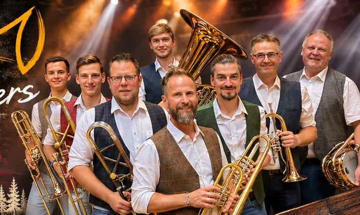
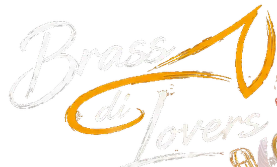
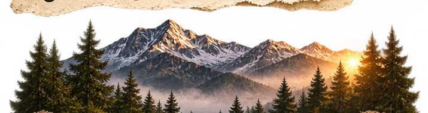
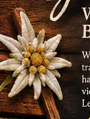

Tradition trifft moderne Hits.


Griaß eich!
Willkommen bei den
Brass di Lovers!
Wir sind acht musikbegeisterte Vollblut-Bläser, die traditionelle Blasmusik mit modernen Hits verbinden – handgemachter Brass-Sound, energiegeladen, vielfältig und immer mit einer großen Portion Leidenschaft.
Mehr über uns